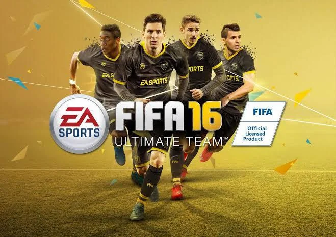

Il primo gioco della serie FIFA, uscito per Sega Mega Drive/Genesis e altre piattaforme.
Nonostante fosse uno dei primi giochi di calcio, offriva un'esperienza abbastanza avanzata per l'epoca,
con 16 squadre internazionali. Mancava di licenze ufficiali, ma la grafica, seppur limitata, era all'avanguardia.
Questo capitolo segna l'introduzione dei club di calcio e delle licenze ufficiali, tra cui la
Premier League. È il primo gioco a usare la licenza della FIFA, anche se le squadre e le licenze erano ancora limitate.
stato anche il primo a introdurre un motore di gioco ispirato al 16-bit.
Il primo titolo a introdurre il motore grafico 3D, migliorando la fluidità dei movimenti dei giocatori. Anche se le animazioni erano ancora rudimentali, il gioco segnò un passo importante verso la creazione di una vera simulazione calcistica. Venne inclusa anche la licenza per la Premier League e altre competizioni internazionali.
Introduceva una delle prime vere modalità di gioco per le qualificazioni a un mondiale (1998), ed espandeva la gamma di squadre e competizioni. Sebbene la grafica fosse ancora limitata per l'epoca, il miglioramento rispetto ai precedenti titoli fu notevole.
Questo gioco è ricordato per l'introduzione della modalità "Road to World Cup", che permetteva ai giocatori di partecipare alle qualificazioni per il Mondiale 1998 in Francia. Aggiungeva nuovi stadi e migliorava la simulazione del gioco con una grafica più dettagliata e animazioni più fluide.
Presentava miglioramenti nelle licenze, nuove modalità di gioco, e per la prima volta il "Dribbling fluido", che dava ai giocatori maggiore controllo sul pallone. Il gioco migliorava le meccaniche di gioco e includeva più squadre internazionali e club di calcio, con l'introduzione di diverse leghe.
Un ulteriore miglioramento nelle modalità di gioco, con una particolare attenzione alla gestione della squadra, inclusa la modalità "Carriera". Venivano introdotte anche le animazioni più fluide, insieme a un sistema di controllo del pallone più realistico. Per la prima volta, il gioco consentiva ai giocatori di creare squadre personalizzate.
Il gioco includeva squadre di club più dettagliate e licenze più ampie. La modalità carriera venne ulteriormente sviluppata, permettendo ai giocatori di gestire le proprie squadre con un maggiore controllo sugli aspetti tattici e strategici. L'aspetto tecnico venne affinato, con una maggiore attenzione alla fluidità del gameplay.
Introduceva la possibilità di giocare la Coppa del Mondo 2002, con squadre nazionali di tutto il mondo. La grafica migliorò notevolmente, con nuove animazioni dei giocatori e stadi più dettagliati. La modalità carriera venne espansa, dando la possibilità di gestire la squadra a livello internazionale e di club.
Un gioco che segnò un altro passo avanti nella simulazione calcistica. Venne introdotto un motore di gioco più preciso e una maggiore attenzione alle licenze. La possibilità di personalizzare la squadra fu ampliata, così come le opzioni di gioco per partite amichevoli e competizioni ufficiali.
Questo capitolo migliorava la fluidità del gameplay, con un sistema di movimento migliorato per i giocatori. Il "Gameplay First" divenne il punto di forza, dando maggiore importanza alla giocabilità. La gestione delle squadre fu rinnovata, e vennero aggiunti nuovi stadi e competizioni.
Introduceva una nuova gestione dei contratti e delle carriere, con un sistema più realistico di trattative e transazioni. Le animazioni vennero perfezionate, e l'IA dei giocatori divenne più sofisticata. La modalità Freestyle venne introdotta, permettendo un controllo maggiore sui movimenti dei giocatori.
Il titolo di FIFA 06 offriva grafica migliorata, grazie all'uso del motore grafico più potente, e un gameplay più realista. Le animazioni vennero ulteriormente migliorate, con un'intelligenza artificiale più reattiva e un'esperienza di gioco più fluida.

Introduzione del "Team Management", che permetteva di gestire tutte le decisioni di una squadra, dalla tattica alla formazione. Le licenze delle squadre vennero ampiamente espanse, e la grafica dei giocatori venne migliorata in modo significativo.
Il capitolo includeva una delle novità più significative della serie: la modalità "Be a Pro", in cui il giocatore assumeva il controllo di un singolo calciatore e doveva farlo crescere durante la carriera. La grafica venne ulteriormente perfezionata, con nuovi effetti speciali.
Un grande miglioramento della grafica e del gameplay, con un'enfasi particolare sul realismo. La modalità "Ultimate Team" venne introdotta, dando ai giocatori la possibilità di costruire la propria squadra dei sogni.
Introduzione delle "Pro Manager", con il controllo avanzato delle squadre. Le animazioni furono perfezionate per essere ancora più naturali e fluide. La fisica del gioco venne migliorata, in particolare nei contatti tra i giocatori.
Con l'introduzione della modalità "Be a Goalkeeper", i giocatori potevano finalmente giocare nel ruolo di portiere, che aggiungeva una nuova dimensione al gameplay. La funzione "Player Impact Engine" migliorò la simulazione dei contatti fisici tra i giocatori.
Il "Player Impact Engine" venne ulteriormente migliorato, rendendo i contatti fisici più realistici. La modalità carriera venne aggiornata, con nuove opzioni e meccaniche di gioco più sofisticate.
Il gioco introduceva il "First Touch Control", migliorando la risposta dei giocatori alla palla. La grafica e le animazioni vennero migliorate per rendere l'esperienza ancora più realistica.
Introduceva il "Precision Movement" che migliorava i movimenti dei giocatori, così come la simulazione della fisica della palla. Vennero migliorate anche le opzioni per il gioco online.
Presentava una grafica eccezionale, con giocatori che sembravano più reali che mai. Il gioco migliorava anche la resa dell'atmosfera negli stadi, con nuovi effetti sonori e spettatori più realistici.

La novità principale era l'introduzione delle squadre femminili, che divenne una delle caratteristiche più apprezzate dai fan. Il gameplay venne affinato, con il controllo del pallone e le animazioni dei giocatori migliorati.
Introduzione della modalità narrativa "The Journey", dove i giocatori controllavano un giovane calciatore, Alex Hunter, mentre cercava di fare carriera. Il gioco beneficò anche della nuova tecnologia di animazione "Frostbite Engine", che migliorava la grafica e la simulazione.
Continuazione della modalità "The Journey", che venne ulteriormente sviluppata con nuove scelte narrative. La grafica venne perfezionata con nuove animazioni e texture migliorate.
Introduce la UEFA Champions League, che diventa uno degli elementi principali della modalità di gioco. In questa edizione, il gameplay è ulteriormente perfezionato, con miglioramenti nelle animazioni e nelle meccaniche di gioco, specialmente per il multiplayer online. La grande novità di FIFA 19 è la conclusione della storia di Alex Hunter nella modalità narrativa "The Journey". Dopo aver seguito la carriera di Hunter in FIFA 17 e FIFA 18, in FIFA 19 si arriva alla fine del suo percorso, con un finale che chiude il capitolo della sua carriera calcistica, dove il giocatore prende decisioni cruciali per il suo futuro. La Champions League e altre nuove modalità di gioco hanno arricchito ulteriormente l'esperienza complessiva.
La modalità "Volta Football" fu l'introduzione principale, che riportava il gioco al calcio di strada, con un gameplay più dinamico e arcade. La grafica fu migliorata e vennero aggiunti nuovi stili di gioco.

Continuazione della modalità "Volta" con nuove opzioni per il gioco online e una maggiore attenzione al gameplay fluido e realistico. L'IA venne affinata per rendere il gioco più avvincente e impegnativo.

L'introduzione della "HyperMotion Technology" portò a un livello superiore le animazioni dei giocatori, con movimenti più fluidi e realistici. Il gioco presentava anche nuove modalità online e un miglioramento generale della carriera e delle modalità di gioco.
Questo fu l'ultimo capitolo con il marchio FIFA. La modalità "FIFA World Cup" fu un’aggiunta importante, e la grafica fu ancora più rifinita grazie alle tecnologie avanzate. Questo capitolo segnò la fine di una lunga collaborazione tra EA e FIFA.

Dopo la fine della partnership con la FIFA, la serie cambiò nome in "EA Sports FC". Nonostante il cambiamento del nome, il gioco manteneva tutte le caratteristiche che avevano reso FIFA popolare. Nuove modalità, miglioramenti grafici e un'attenzione particolare alle modalità online rimasero al centro dell'esperienza di gioco.